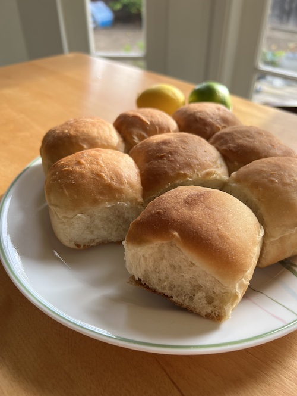

French Bread Rolls

Description
Soft, pillowy bread rolls without butter or milk, and very minimal kneading! The best dinner roll recipe I've made so far. I've used canola, olive, and coconut oil, but I think canola has the best result. Also, honey makes the dough slightly wetter than sugar – adjust the flour amount as needed.
Original recipe from mel's kitchen cafe.
Ingredients
- 1 ½ cups warm water
- 1 tablespoon instant yeast
- 2 tablespoons granulated sugar or honey
- 2 tablespoons canola oil
- 1 teaspoon salt
- 3 ½ to 4 cups (497 to 569 g) all-purpose or bread flour, more or less
Steps
- In the bowl of a stand mixer fitted with the dough hook or in a large bowl by hand, combine the warm water, instant yeast, sugar, oil, salt and 2 cups of the flour.
- Begin mixing, and continue to add the rest of the flour gradually until the dough has pulled away from the sides of the bowl. Begin kneading the dough for 4-5 minutes in a stand mixer (7-9 minutes by hand).
- The dough should be soft and smooth but still slightly tacky to the touch. After a few minutes of kneading, stop the mixer and grab a small piece of dough to test if it needs more flour or not. It might leave a little bit of sticky residue on your fingers, but if you can roll it into a small ball without it sticking all over to your hands, it is good to go. If not, gradually add a bit more flour as needed.
- Place the dough in a lightly greased bowl and cover. Let the dough rise until doubled, 1-2 hours.
- Lightly punch down the dough and turn it out onto a lightly greased countertop.
- Divide the dough into 12 equal pieces (about 2.75 ounces each, more or less), and form the dough into round balls.
- Place the rolls in a lightly greased 9X13-inch pan or on a large, rimmed baking sheet lined with parchment or lightly greased. Space the rolls about 1/2- to 1-inch apart.
- Cover the rolls with lightly greased plastic wrap taking care not to pin the plastic wrap under the baking sheet or else the rolls will flatten while rising. Let the plastic wrap gently hang over the sides of the pan to fully cover the rolls but not press them down.
- Let the rolls rise until very puffy and doubled, about 45 minutes to 1 hour.
- Preheat the oven to 400 degrees. Bake for 15-17 minutes until lightly browned and cooked through.
- Immediately out of the oven, brush with butter. (optional)